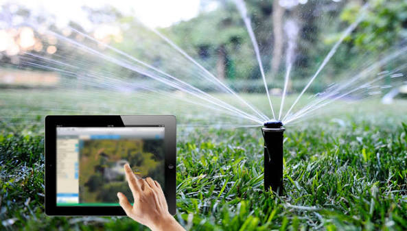

Riego Inteligente: Cultivos Conectados
Investigación orientada al diseño de nodos sensores de bajo coste energizados mediante paneles solares compactos. Los dispositivos capturan parámetros críticos como potencial hídrico del suelo, temperatura foliar y conductividad eléctrica, comunicándose mediante una topología mallada (LoRaWAN) para operar en zonas rurales sin cobertura móvil convencional.
Contexto y Aplicación
Proyecto desarrollado ante la crisis hídrica de la zona central, logrando reducir en hasta un 32% el consumo de agua mediante ciclos de riego dosificados con precisión.